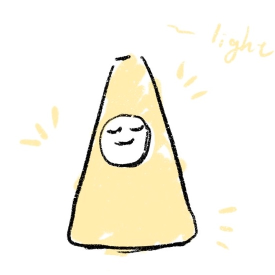
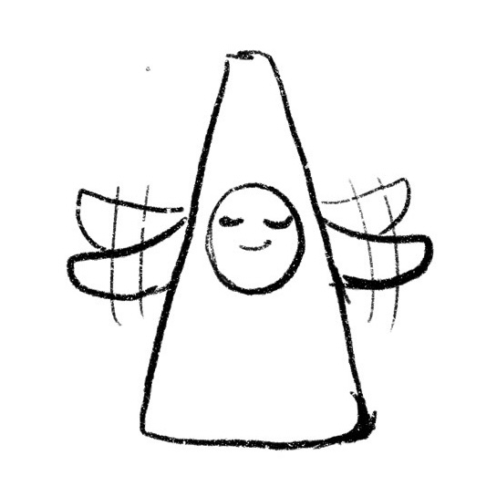

Concept
A Friendly Bird-Like Companion
The pyramidal structure originates from the geometry of a traffic cone. Through visual abstraction and soft materialization, the cone becomes a clumsy, adorable bird-like creature.
By shifting proportions to mimic baby-like traits (a large head, wide eyes, and a soft body envelope), the design reduces the user's perception of machinery and builds a warm, approachable personality.

Initial cone-to-bird sketches

Proportions & movement geometry

Final form refinement